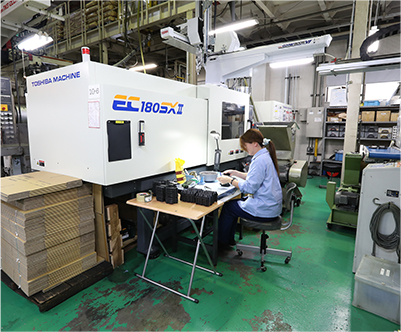
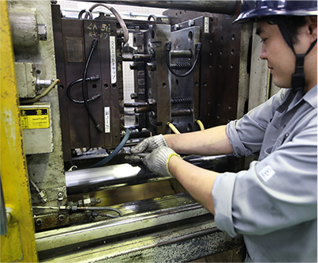
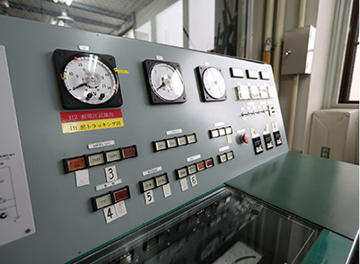
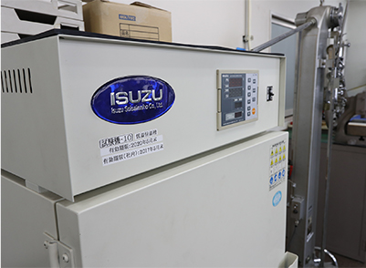
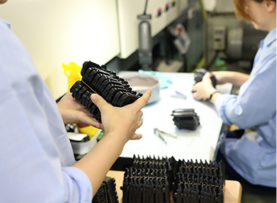
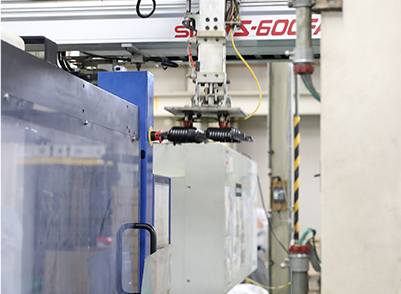

新しく成形機を導入いたしました。
真心を込めて、製品の安定供給に努めます。
株式会社チヨダは「硬質塩ビ」の製造に適応した、設備を揃えています。
東芝EC-SXシリーズは、EC-Sシリーズと同様のコンセプトのもと、新開発の型締装置と射出装置による基本性能の大幅な向上により「精密・安定成形」「高生産性」を実現した高機能な全電動式射出成形機です。
・硬質塩ビ対応のスクリュー
・硬質塩ビ対応の加熱筒
・射出力のパワーアップ
原料としてPVC（硬質塩ビ）を使用できる設備は、汎用成形機と違って特注の成形機になります。
- 
- 
| 設備 | 成形射出量／g | 数量 | |
|---|---|---|---|
| PVC | PE | ||
| 東芝450t射出成形機 | 1,487g | 1,083g | 1台 |
| 日精460t射出成形機 | ─── | 1,152g | 1台 |
| 東芝350t射出成形機 | 1,209g | 880g | 1台 |
| 東芝230t射出成形機 | 847g | 619g | 1台 |
| 東芝150t射出成形機 | 489g | 356g | 1台 |
| 東芝160t射出成形機 | 353g | 258g | 1台 |
| 東芝180t射出成形機 | 393g | 286g | 1台 |
| 東洋180t射出成形機 | ─── | 285g | 1台 |
| 日精40t射出成形機 | ─── | 36g | 1台 |
| 自動取出装置 | ─── | ─── | 9台 |
| 熱風乾燥装置 | ─── | ─── | 1台 |
| ホッパドライヤー | ─── | ─── | 2台 |
| ローダー（原料供給装置） | ─── | ─── | 9台 |
| 粉砕機 | ─── | ─── | 9台 |
近年技術は急速に進んでいます。
チヨダにおいても最高の製品を迅速に供給すべく基礎から応用まで充実した研究体制をとっています。
- 
- 
完成品に対しては、万全の注意を払って、保管・管理。
また、受注から納品に至るまでの一貫システムに、総合チェック体制で挑んでいます。
- 
- 